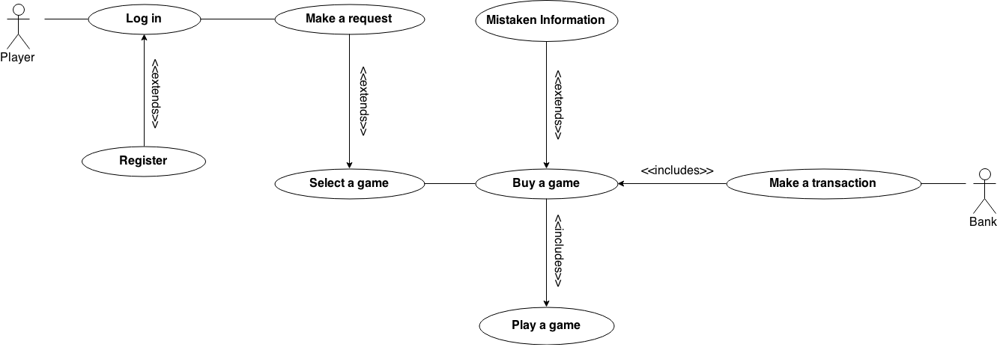
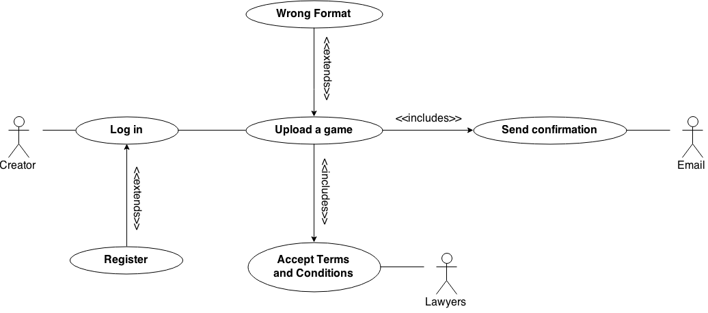

SEMINARI 2
Identify requirements
Use case -> PURCHASE IN STORE
CONTEXT: User wants to purchase a game in the store.
PRIMARY ACTORS: User (generalizes to Player).
SUPPORT ACTORS: Internet provider, E-mail, Transfer System (such as Paypal).
PRECONDITIONS: The user must be logged in as a Player.
SUCCESSFUL POSTCONDITIONS: The game has been purchased.
UNSUCCESSFUL POSTCONDITIONS: There has been an error while buying the game.
BASIC FLOW:
---| 1. User looks for a game searching it by its words or category.
---| 2. System shows the results of the query.
---| 3. User picks up the desired game.
---| 4. System shows game's window what includes its creator and a brief description.
---| 5. User press the purchase or download button.
---| 6. System displays the transaction window and ask for confirmation.
---| 7. User confirms the purchasing.
---| 8. System redirects the user to the transfer system.
---| 9. User has paid correctly.
---| 10. System informs the user by email and send a unique download link.
---| 11. User starts downloading the game and confirms when it has finished.
EXTENSIONS:
---| 2.a The query result shows that our database does not have that game.
---| 2.a.1 Offer similar games.
---| 2.a.2 Go back to step 1.
*
---| 7.a Inform the user that our servers might be crashed and they must wait a few minutes.
---| 7.b The user confimation information is mistaken.
---| 7.b.1 Launch an extension use case "User's confirmation".
*
---| 8.a Transfer system is down.
---| 8.a.1 Wait for a few minutes then redirect the user again to the transfer system.
*
---| 11.a User can not open the download link.
---| 11.a.1 Send another download link, better if it is stored in another server.
IMPLIED STAKEHOLDERS
DIAGRAM 
Use case -> UPLOAD A GAME
CONTEXT: User wants to upload a game.
PRIMARY ACTORS: User (generalizes to Creator).
SUPPORT ACTORS: Internet provider, E-mail, Uploading System, User (generalizes to Tester)
PRECONDITIONS: The user must be logged in as a Creator.
SUCCESSFUL POSTCONDITIONS: The game has been uploaded correctly.
UNSUCCESSFUL POSTCONDITIONS: The uploading process have failed.
BASIC FLOW:
---| 1. User presses the upload button.
---| 2. System shows the upload window.
---| 3. User uploads the game in a specific format.
---| 4. System checks the file's corectness.
---| 5. User confirms and accepts the terms and conditions.
---| 6. System notifies the user by e-mail that the game has been uploaded correctly.
EXTENSIONS:
---| 3.a User can not upload the game into our servers.
---| 3.a.1 System tells the user to wait for a few minutes.
---| 3.a.2 Go back to step 3.
*
---| 4.a System notices that the file format is not correct.
---| 4.a.1 Indicate the mistakes in the file's format.
---| 4.a.2 Go back to step 3.
*
---| 6.a E-mail provider is crashed.
---| 6.a.1 Tell the user that he will receive the confirmation e-mail lateky, although the game has been upload correctly.
IMPLIED STAKEHOLDERS
DIAGRAM 
Task 5: Updated glossary
Task 6: Updated obscure point
We should add an a quality poll for the users?
We have to introduce an a quality poll to verify our system works throught the users.